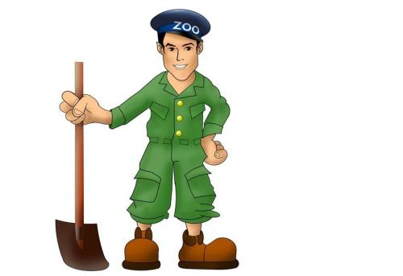
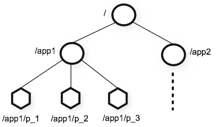

ZooKeeper は Apache ソフトウェア財団のソフトウェアプロジェクトであり、大規模な分散コンピューティングにオープンソースの分散構成サービス、同期サービス、名前登録を提供します。
ZooKeeper のアーキテクチャは冗長サービスにより高可用性を実現します。
Zookeeper の設計目標は、複雑でエラーが発生しやすい分散一貫性サービスをカプセル化し、効率的で信頼性の高いプリミティブセットを構成し、一連のシンプルで使いやすいインターフェースとしてユーザーに提供することです。
これは典型的な分散データ一貫性のソリューションであり、分散アプリケーションはこれに基づいて、データ公開/購読、ロードバランシング、名前サービス、分散調整/通知、クラスタ管理、マスター選出、分散ロック、分散キューなどの機能を実装できます。

誰がこのチュートリアルを読むべきですか？
このチュートリアルはプロのプログラム開発者向けであり、このチュートリアルを通じて zookeeper のアプリケーションを段階的に理解できます。
zookeeper データ構造
zookeeper が提供する名前空間は標準ファイルシステムに非常に似ており、key-value の形式で格納されます。名前 key はスラッシュ/で区切られた一連のパス要素であり、zookeeper 名前空間の各ノードはパスで識別されます。

関連する CAP 理論
CAP 理論は、分散コンピューティングシステムにおいて、以下の3点を同時に満たすことは不可能であると指摘しています：- 一貫性：分散環境において、一貫性とはデータが複数のレプリカ間で一貫性を維持できるかどうかの特性であり、すべてのノードが同じ最新のデータレプリカにアクセスすることと同じです。一貫性の要件の下では、システムがデータ一貫性のある状態で更新操作を実行した後、システムのデータが引き続き一貫した状態にあることを保証する必要があります。
-
可用性：毎回のリクエストが正しい応答を取得できますが、取得したデータが最新データであることは保証されません。
-
パーティション障害許容性：分散システムは、ネットワークパーティション障害が発生した場合でも、一貫性と可用性を満たすサービスを外部に提供できることを保証する必要があります。ネットワーク環境全体に障害が発生した場合を除きます。
分散システムは、一貫性（Consistency）、可用性（Availability）、パーティション障害許容性（Partition tolerance）の3つのうち、最大でも同時に2つしか満たすことができません。
これら3つの基本要件のうち、同時に満たせるのは最大2つまでであり、P は必須であるため、CP と AP のどちらかを選択することになります。zookeeper が保証するのは CP であり、対照的に spring cloud システムのレジストリ eruka が実装するのは AP です。

BASE 理論
BASE は、Basically Available（基本可用）、Soft-state（ソフト状態）、Eventually Consistent（結果整合性）の3つのフレーズの略語です。
基本可用：分散システムで障害が発生した場合、部分的な可用性の低下（サービス低下、ページ低下）は許容されます。
ソフト状態：分散システムに中間状態が発生することを許容します。また、中間状態はシステムの可用性に影響しません。ここでの中間状態とは、異なる data replication（データバックアップノード）間のデータ更新に遅延が発生しうる結果整合性を指します。
- 結果整合性：data replications は時間が経過すると一貫性を達成します。
BASE 理論は、CAP における一貫性と可用性をトレードオフした結果であり、理論の中核となる考え方は、強一貫性を実現することはできませんが、各アプリケーションは自身のビジネス特性に応じて適切な方法を採用し、システムを結果整合性に到達させることができるということです。
関連リソース
zookeeper 公式サイト：https://zookeeper.apache.org/